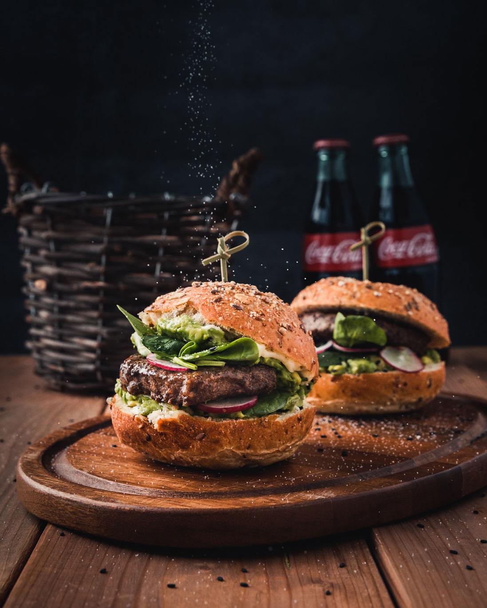

Le ricette della nonna, quelle di una volta. Senza carne, senza sangue e senza nessun cadavere sul tuo piatto. Sì, è possibile anche se tu continui a non crederci. Cosa? Continui a dubitare? Vieni, scegli una ricetta e datti da fare. Ti sorprenderà sapere che l’unica cosa noiosa e senza senso sono i tuoi pregiudizi e non il cibo vegetariano.